library(dplyr)
library(ggplot2)STT 2860 Final Project: Hockey
Abstract
In this project we will aim to find indicators of playoff success from regular season and playoff statistics in the NHL.
Loading Necessary Packages
In this project we will use the dplyr package to munge data. The ggplot2 package will be used to plot and visualize the data.
Importing Data
The information used herein was obtained free of charge from and is copyrighted by the Hockey Databank Project. For more information about the Hockey Databank Project please visit: http://sports.groups.yahoo.com/group/hockey-databank
All of the data was downloaded from Kaggle. This project contains 2 data sets and each file was imported and read with the read.csv() function.
regseason <- read.csv(file = "./data/Teams.csv",
header = TRUE,
stringsAsFactors = FALSE)
postseason <- read.csv(file = "./data/TeamsPost.csv",
header = TRUE,
stringsAsFactors = FALSE)Examining and Munging Data
First let’s examine the structure of these two data frames using the str() function to see what we are working with.
str(regseason)'data.frame': 1519 obs. of 27 variables:
$ year : int 1909 1909 1909 1909 1909 1909 1909 1910 1910 1910 ...
$ lgID : chr "NHA" "NHA" "NHA" "NHA" ...
$ tmID : chr "COB" "HAI" "LES" "MOS" ...
$ franchID : chr "BKN" "MTL" "TBS" "MOS" ...
$ confID : chr "" "" "" "" ...
$ divID : chr "" "" "" "" ...
$ rank : int 4 5 7 6 1 2 3 2 4 1 ...
$ playoff : chr "" "" "" "" ...
$ G : int 12 12 12 12 12 12 12 16 16 16 ...
$ W : int 4 4 2 3 11 9 8 8 7 13 ...
$ L : int 8 8 10 8 1 3 3 8 9 3 ...
$ T : int 0 0 0 1 0 0 1 0 0 0 ...
$ OTL : int NA NA NA NA NA NA NA NA NA NA ...
$ Pts : int 8 8 4 7 22 18 17 16 14 26 ...
$ SoW : int NA NA NA NA NA NA NA NA NA NA ...
$ SoL : int NA NA NA NA NA NA NA NA NA NA ...
$ GF : int 79 77 59 52 91 89 96 66 73 122 ...
$ GA : int 104 83 100 95 41 66 54 62 88 69 ...
$ name : chr "Cobalt Silver Kings" "Haileybury Hockey Club" "Les Canadiens" "Montreal Shamrocks" ...
$ PIM : int NA NA NA NA NA NA NA NA NA NA ...
$ BenchMinor: int NA NA NA NA NA NA NA NA NA NA ...
$ PPG : int NA NA NA NA NA NA NA NA NA NA ...
$ PPC : int NA NA NA NA NA NA NA NA NA NA ...
$ SHA : int NA NA NA NA NA NA NA NA NA NA ...
$ PKG : int NA NA NA NA NA NA NA NA NA NA ...
$ PKC : int NA NA NA NA NA NA NA NA NA NA ...
$ SHF : int NA NA NA NA NA NA NA NA NA NA ...str(postseason)'data.frame': 927 obs. of 17 variables:
$ year : int 1913 1913 1914 1914 1916 1916 1917 1917 1917 1917 ...
$ lgID : chr "NHA" "NHA" "NHA" "NHA" ...
$ tmID : chr "MOC" "TBS" "MOW" "OT1" ...
$ G : int 2 2 2 2 2 2 2 2 2 2 ...
$ W : int 1 1 1 1 1 1 1 1 0 1 ...
$ L : int 1 1 1 1 1 1 1 1 1 0 ...
$ T : int 0 0 0 0 0 0 0 0 1 1 ...
$ GF : int 2 6 1 4 7 6 7 10 2 3 ...
$ GA : int 6 2 4 1 6 7 10 7 3 2 ...
$ PIM : int NA NA NA NA NA NA 59 68 NA NA ...
$ BenchMinor: int NA NA NA NA NA NA NA NA NA NA ...
$ PPG : int NA NA NA NA NA NA NA NA NA NA ...
$ PPC : int NA NA NA NA NA NA NA NA NA NA ...
$ SHA : int NA NA NA NA NA NA NA NA NA NA ...
$ PKG : int NA NA NA NA NA NA NA NA NA NA ...
$ PKC : int NA NA NA NA NA NA NA NA NA NA ...
$ SHF : int NA NA NA NA NA NA NA NA NA NA ...A lot of these variables are not named intuitively. We will fix that using the mutate verb so they make more sense. Additionally we will select for the variables we want to look at as some are going to be unnecessary for this project.
rsupdate <- regseason |>
filter(year >= 2005) |>
mutate(Abrev = tmID,
rsG = G,
rsW = W,
rsL = L,
rsT = T,
rsOTL = OTL,
rsGF = GF,
rsGA = GA,
rsPIMpG = PIM / G,
rsPPpercent = (PPG / PPC) * 100,
rsPKpercent = 100 - ((PKG / PKC) * 100),
rsPPGF = PPG,
rsPPGF = PPG,
rsPPs = PPC,
rsSHGA = SHA,
rsSHGF = SHF) |>
select(year, franchID, name, tmID,
Pts, rank, playoff,
rsG, rsW, rsL,
rsOTL, rsGF, rsGA,
rsPPpercent, rsPKpercent, rsPPGF,
rsPPs, rsSHGF, rsSHGA,
rsPIMpG)
psupdate <- postseason |>
filter(year >= 2005) |>
mutate(psG = G,
psW = W,
psL = L,
psGF = GF,
psGA = GA,
psPIM = PIM,
psPPpercent = (PPG / PPC) * 100,
psPKpercent = 100 - ((PKG / PKC) * 100),
psPPGF = PPG,
psPPs = PPC,
psPPGA = PKG,
psPPsA = PKC,
psSHGA = SHA,
psSHGF = SHF,
psPIMpG = PIM / psG) |>
select(year, tmID, psG,
psW, psL, psGF,
psGA, psPPpercent, psPKpercent,
psPPGF, psPPs, psSHGF, psSHGA, psPIMpG)Now, we will combine the two data frames into one and call it NHL. Then we will look at the structure, using str(), of the new data frame.
NHL <- full_join(
rsupdate,
psupdate,
by = join_by(year == year, tmID == tmID)
)
str(NHL)'data.frame': 210 obs. of 32 variables:
$ year : int 2005 2005 2005 2005 2005 2005 2005 2005 2005 2005 ...
$ franchID : chr "ANA" "WPG" "BOS" "BUF" ...
$ name : chr "Mighty Ducks of Anaheim" "Atlanta Thrashers" "Boston Bruins" "Buffalo Sabres" ...
$ tmID : chr "ANA" "ATL" "BOS" "BUF" ...
$ Pts : int 98 90 74 110 103 112 74 65 95 112 ...
$ rank : int 3 3 5 2 1 1 3 4 2 1 ...
$ playoff : chr "CF" "" "" "CF" ...
$ rsG : int 82 82 82 82 82 82 82 82 82 82 ...
$ rsW : int 43 41 29 52 46 52 35 26 43 53 ...
$ rsL : int 27 33 37 24 25 22 43 43 30 23 ...
$ rsOTL : int 12 8 16 6 11 8 4 13 9 6 ...
$ rsGF : int 254 281 230 281 218 294 223 211 283 265 ...
$ rsGA : int 229 275 266 239 200 260 279 285 257 218 ...
$ rsPPpercent: num 18.1 19 14.8 21.2 18.2 ...
$ rsPKpercent: num 83.5 79.3 83.7 86.6 84.3 ...
$ rsPPGF : int 87 100 62 101 87 95 64 51 89 88 ...
$ rsPPs : int 480 527 418 477 478 531 451 417 473 498 ...
$ rsSHGF : int 9 13 9 10 8 17 10 6 11 10 ...
$ rsSHGA : int 13 10 10 17 7 13 8 12 12 7 ...
$ rsPIMpG : num 17.8 16.4 14.3 14.2 18.1 ...
$ psG : int 16 NA NA 18 7 25 NA NA 9 5 ...
$ psW : int 9 NA NA 11 3 16 NA NA 4 1 ...
$ psL : int 7 NA NA 7 4 9 NA NA 5 4 ...
$ psGF : int 46 NA NA 60 16 73 NA NA 22 15 ...
$ psGA : int 36 NA NA 49 17 60 NA NA 31 18 ...
$ psPPpercent: num 10.8 NA NA 16.2 14 ...
$ psPKpercent: num 88.5 NA NA 82.6 86.4 ...
$ psPPGF : int 11 NA NA 16 6 31 NA NA 5 5 ...
$ psPPs : int 102 NA NA 99 43 129 NA NA 52 31 ...
$ psSHGF : int 1 NA NA 5 2 2 NA NA 2 1 ...
$ psSHGA : int 4 NA NA 2 1 2 NA NA 1 1 ...
$ psPIMpG : num 16.7 NA NA 12.2 18.4 ...Lets look at, and define, the variables we have in the NHL data frame.
year: The NHL season in which the observation is from. The year 2005 refers to the 2005-06 NHL season.
name: The full name of the team.
tmID: The abbreviated name of the team.
Pts: Points accumulated by the team at the end of the regular season. A team gets 2 points for a win, 1 point for an overtime loss, and 0 points for a regulation loss.
rank: The team’s final ranking in the standings.
playoff: How the team finished in the playoffs. CQF means they lost in the Conference Quarter Finals (round 1). CSF means they lost in the Conference Semi Finals (round 2). CF means they lost in the Conference Finals (round 3). F means they lost in the finals (round 4). SC means they won the Stanley Cup!
rsG: The amount of games played in the regular season.
rsW: The amount of wins in the regular season.
rsL: The amount of losses in the regular season.
rsOTL: The amount of overtime losses in the regular season.
rsGF: The amount of goals scored by the team in the regular season.
rsGA: The amount of goals given up by the team in the regular season.
rsPPpercent: The percentage of power plays that the team scored during in the regular season.
rsPKpercent: The percentage of penalty kills a team was successful in not giving up a goal in the regular season.
rsPPGF: The amount of power play goals scored in the regular season.
rsPPs: The amount of power plays a team had in the regular season.
rsSHGF: The amount of goals scored by a team while they are on the penalty kill in the regular season.
rsSHGA: The amount of penalty kill goals scored by opposing teams in the regular season.
rsPIMpG: The average amount of penalty minutes a team had each game in the regular season.
psG: The amount of games played in the playoffs.
psW: The amount of wins in the playoffs.
psL: The amount of losses in the playoffs.
psGF: The amount of goals scored by the team in the playoffs.
psGA: The amount of goals given up by the team in the playoffs.
psPPpercent: The percentage of power plays that the team scored during in the regular season.
psPKpercent: The percentage of penalty kills a team was successful in not giving up a goal in the playoffs.
psPPGF: The amount of power play goals scored in the playoffs.
psPPs: The amount of power plays a team had in the regular season.
psSHGF: The amount of goals scored by a team while they are on the penalty kill in the playoffs.
psSHGA: The amount of penalty kill goals scored by opposing teams in the playoffs.
psPIMpG: The average amount of penalty minutes a team had each game in the playoffs.
Plotting Trends and Visualizing Data
The main thing that we will be looking at in this project is to try and find regular season stats that can be indicators of playoff success. First, we will look at how the points (Pts) each team earned can indicate playoff success (playoff).
The data points in a lot of these graphs will be jittered using position = position_jitter() allowing us to see overlapping data points. This means that the left-right shift of data within each year column does not mean anything.
ggplot(data = NHL, aes(x = year, y = Pts, color = playoff)) +
geom_point(position = position_jitter(h=0, w=0.15)) +
theme_bw() +
labs(x = "Year",
y = "Points")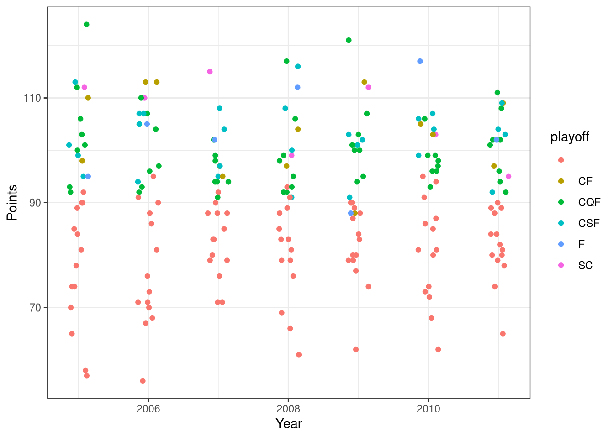
It’s interesting that in only 1 these years the top team in points won the Stanley Cup. Additionally it was the fourth worst team to make the playoffs in 2011 to win the Stanley Cup. Next, we will look at goals for (rsGF) and goals against (rsGA).
ggplot(data = NHL, aes(x = year, y = rsGA, color = playoff)) +
geom_point(position = position_jitter(h=0, w=0.15)) +
theme_bw() +
labs(x = "Year",
y = "Regular Season Goals Against")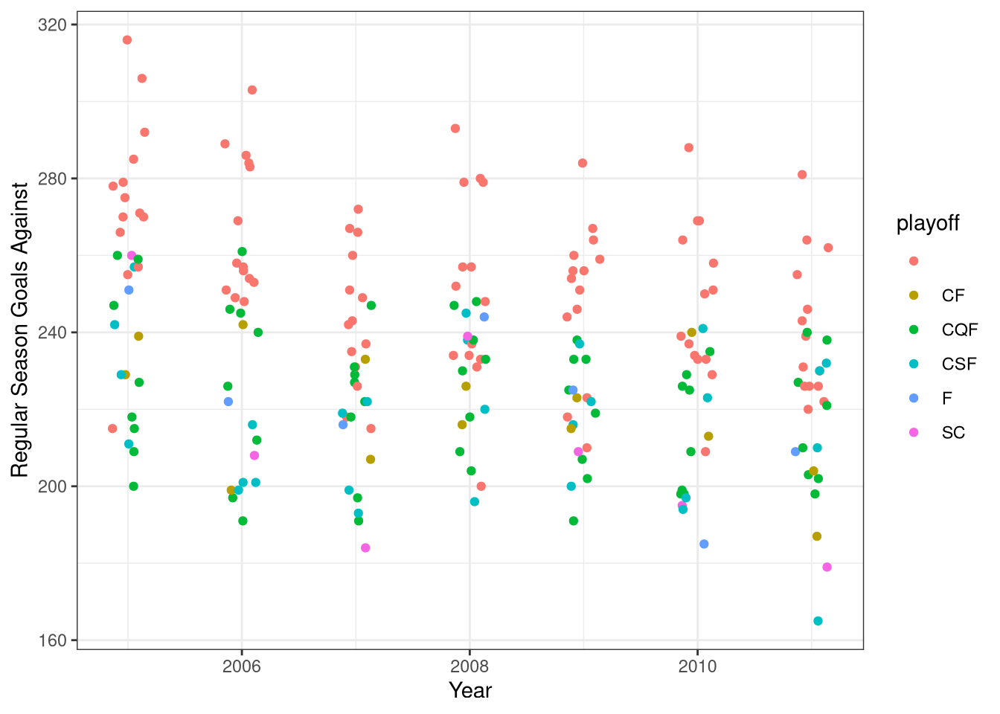
ggplot(data = NHL, aes(x = year, y = rsGF, color = playoff)) +
geom_point(position = position_jitter(h=0, w=0.25)) +
theme_bw() +
labs(x = "Year",
y = "Regular Season Goals For")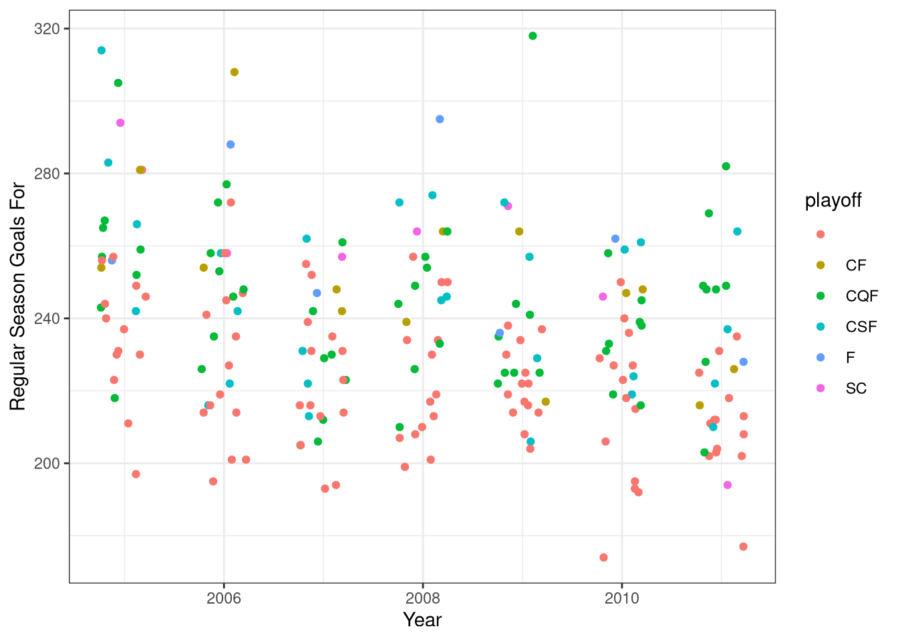
ggplot(data = NHL, aes(x = rsGF, y = rsGA, color = playoff)) +
geom_point() +
theme_bw() +
labs(x = "Regular Season Goals For",
y = "Regular Season Goals Against")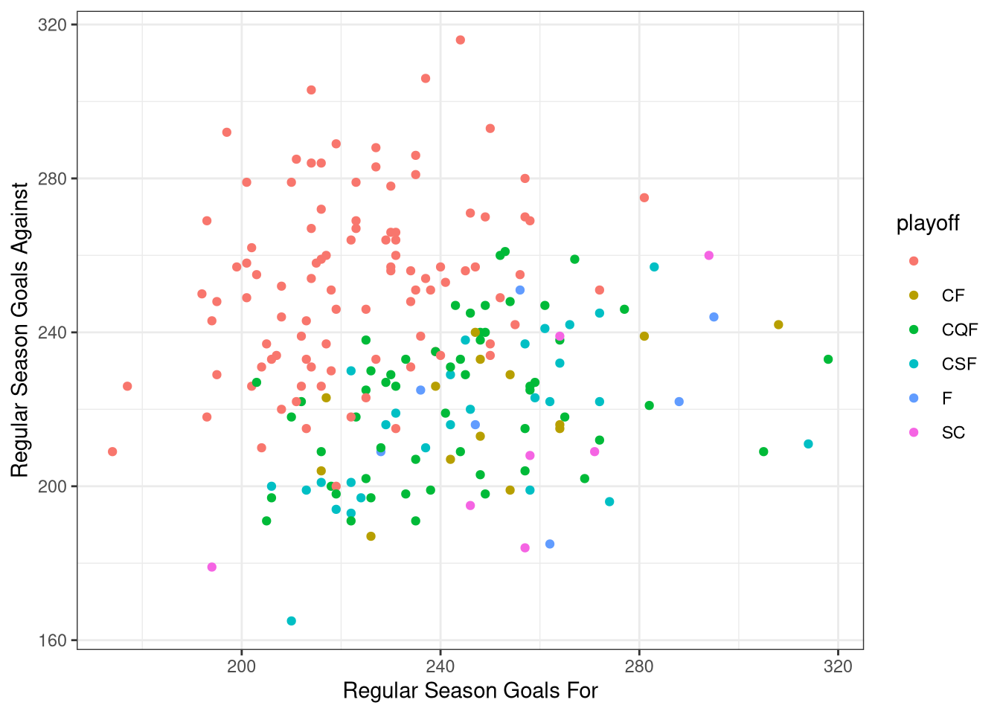
It looks like regular season goals for and goals against are not perfect indicators of playoff success individually. When both goals for and goals against are plotted together, it can be seen that being a team can be successful if they are either good at both goals for and goals against or elite at one and poor at the other. Next we will look at penalty minutes (rsPIMpG) to see if being more disciplined in the regular season can indicate a successful playoff team.
ggplot(data = NHL, aes(x = year, y = rsPIMpG, color = playoff)) +
geom_point(position = position_jitter(h=0, w=0.25)) +
theme_bw() +
labs(x = "Year",
y = "Regular Season Penalty Minuter per Game")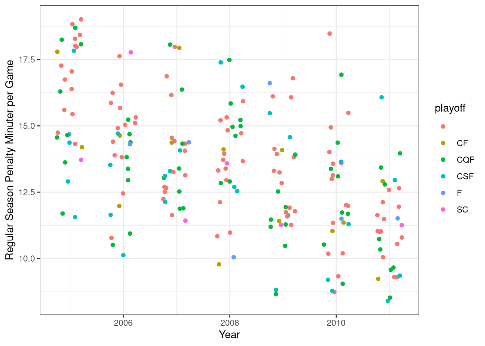
It looks like regular season penalty minutes is not a good indicator either of playoff success. In fact, in 2006 the Stanley Cup winner had the most regular season penalty minutes in the entire NHL. Next, let’s look at special teams: the penalty kill (rsPKpercent) and power play (rsPPpercent).
ggplot(data = NHL, aes(x = year, y = rsPPpercent, color = playoff)) +
geom_point(position = position_jitter(h=0, w=0.25)) +
theme_bw() +
labs(x = "Year",
y = "Regular Season Power Play Percentage")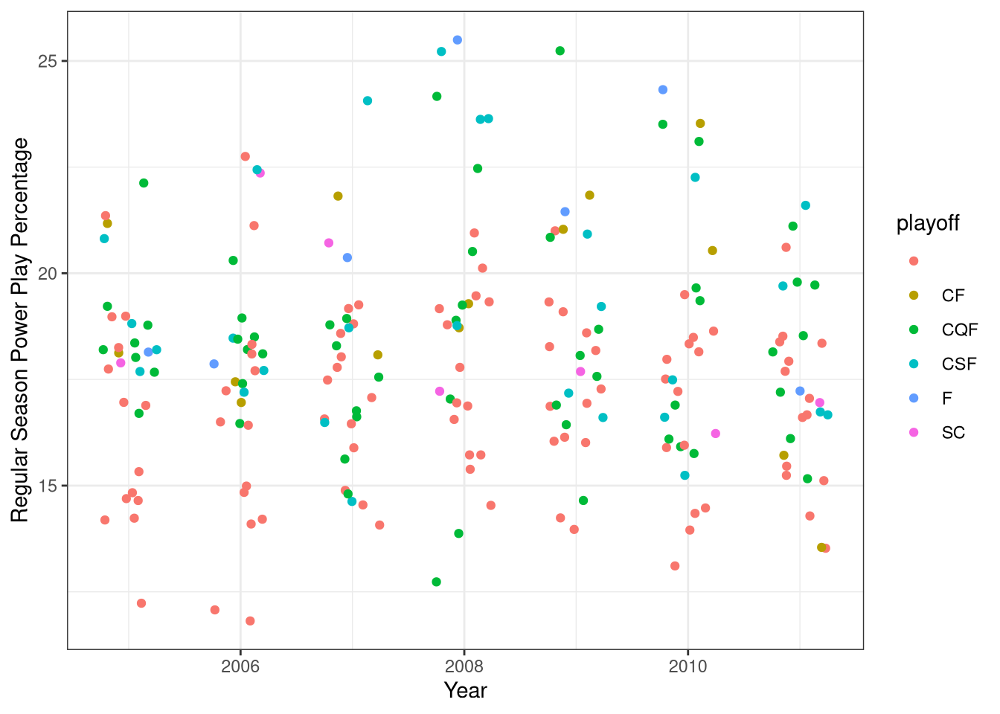
ggplot(data = NHL, aes(x = year, y = rsPKpercent, color = playoff)) +
geom_point(position = position_jitter(h=0, w=0.25)) +
theme_bw() +
labs(x = "Year",
y = "Regular Season Penalty Kill Percentage")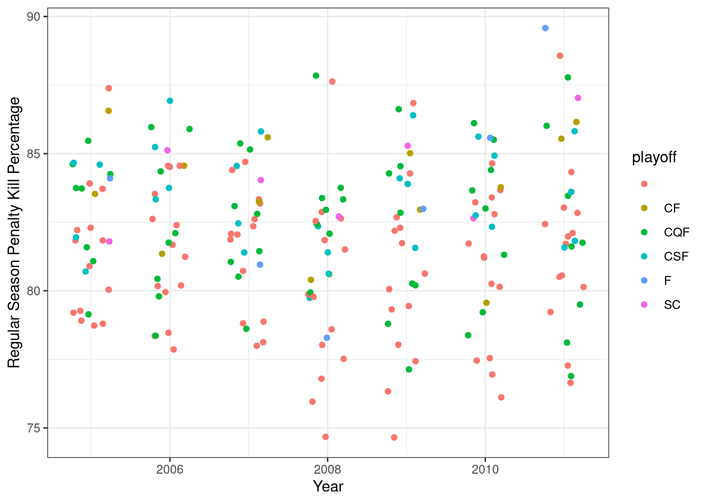
ggplot(data = NHL, aes(x = rsPKpercent, y = rsPPpercent, color = playoff)) +
geom_point(position = position_jitter(h=0, w=0.25)) +
theme_bw() +
labs(x = "Regular Season Penalty Kill Percentage",
y = "Regular Season Power Play Percentage")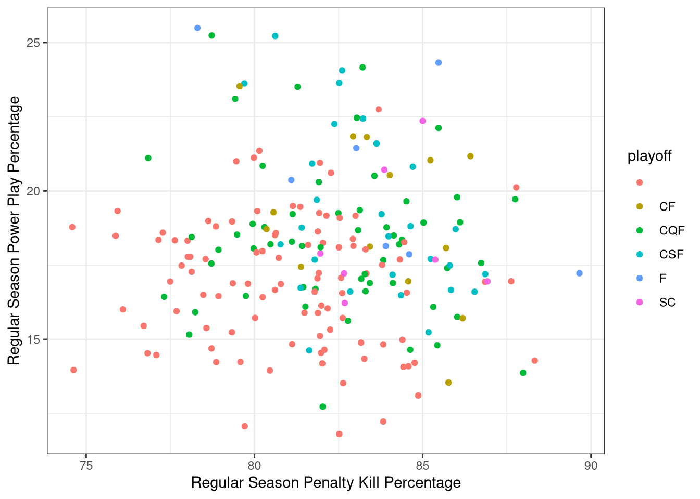
It seems that having a balanced special teams is important to having playoff success. Most teams to be only good at one aspect tend to struggle in the playoffs. It looks like having a great penalty kill is slightly more important than having a good power play.
Let’s add another variable to the data frame called WPts which will indicate the amount of points that come from wins, as opposed to the one point a team gets for an overtime loss.
NHL <- NHL |>
mutate(WPts = Pts - rsW)ggplot(data = NHL, aes(x = Pts, y = WPts, color = playoff)) +
geom_point(position = position_jitter(h=0, w=0.25)) +
theme_bw() +
labs(x = "Points",
y = "Points from Wins")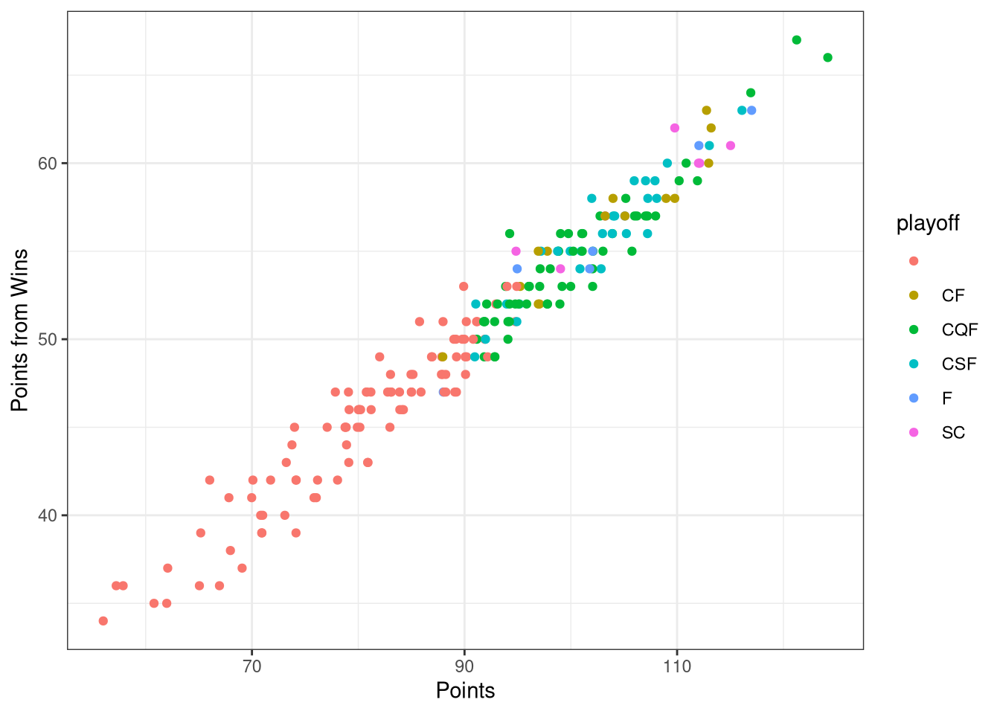
Since in the playoffs the only thing that matters in winning, I expected to see a trend that successful teams in the playoffs would be on the top of this line however only 2 of the Stanley Cup winners are.
It appears that there are not any good indicators of playoff success that come from the regular season. Instead, let’s look at playoff stats and see what areas the Stanley Cup winners excel at.
ggplot(data = NHL, aes(x = psGF, y = psGA, color = playoff)) +
geom_point() +
theme_bw() +
labs(x = "Playoff Goals For",
y = "Playoff Goals Against")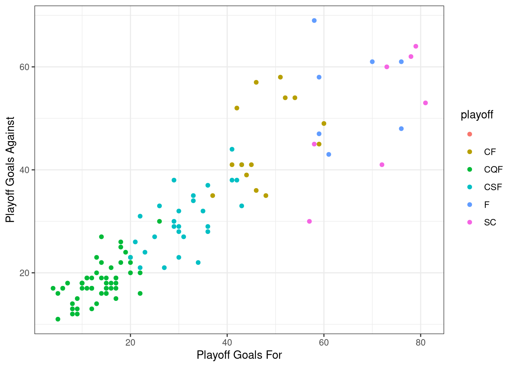
From this plot it appears that successful playoff teams need to be good at both scoring and defending however, it looks like limiting goals against is more important than scoring goals. It looks like the teams that give up a lot of goals tend to get eliminated in the conference finals. Let’s look at discipline in the playoffs next.
ggplot(data = NHL, aes(x = year, y = psPIMpG, color = playoff)) +
geom_point(position = position_jitter(h=0, w=0.25)) +
theme_bw() +
labs(x = "Year",
y = "Playoff Penalty Minutes per Game")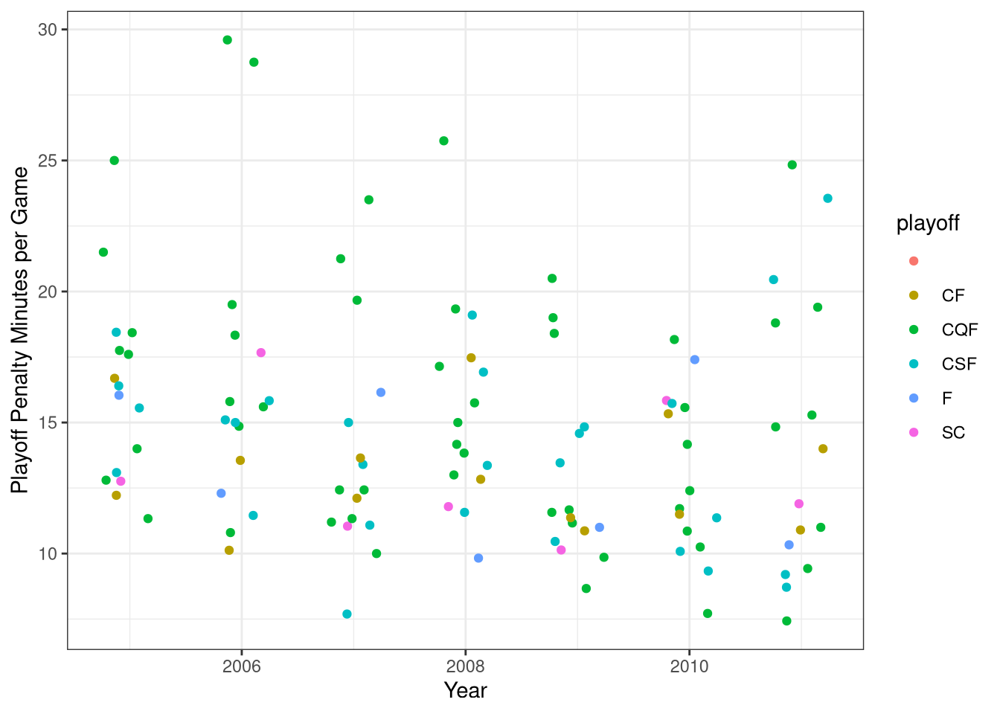
More often than not, playoff discipline is important however in none of the studied years was did the Stanley Cup winner have the fewest PIM per game. This could indicate that being disciplined is good however some edge, grit, and hard work that can lead to some penalty minutes is also important. Finally we will look at playoff special teams.
ggplot(data = NHL, aes(x = year, y = psPPpercent, color = playoff)) +
geom_point(position = position_jitter(h=0, w=0.25)) +
theme_bw() +
labs(x = "Year",
y = "Playoff Power Play Percentage")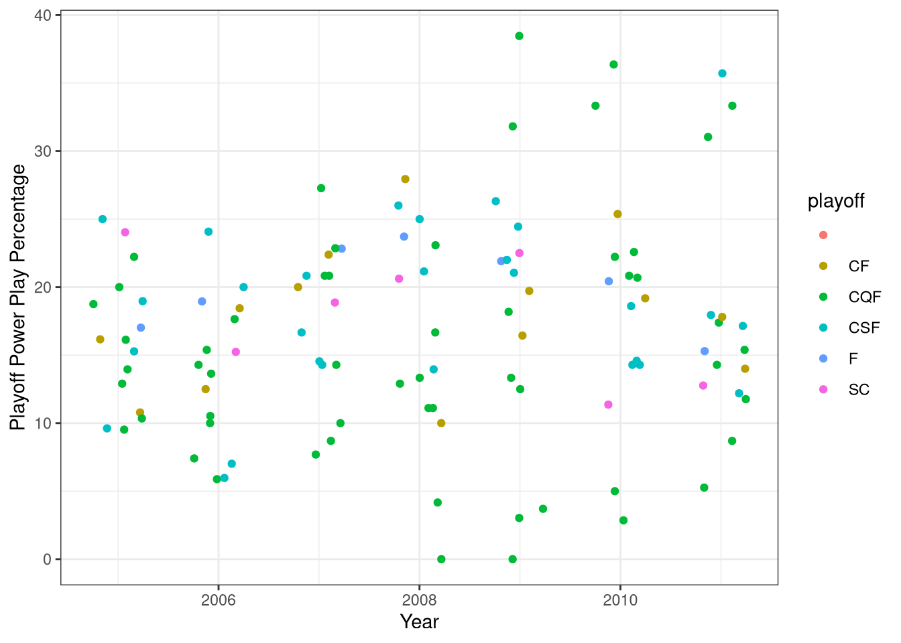
ggplot(data = NHL, aes(x = year, y = psPKpercent, color = playoff)) +
geom_point(position = position_jitter(h=0, w=0.25)) +
theme_bw() +
labs(x = "Year",
y = "Playoff Penalty Kill Percentage")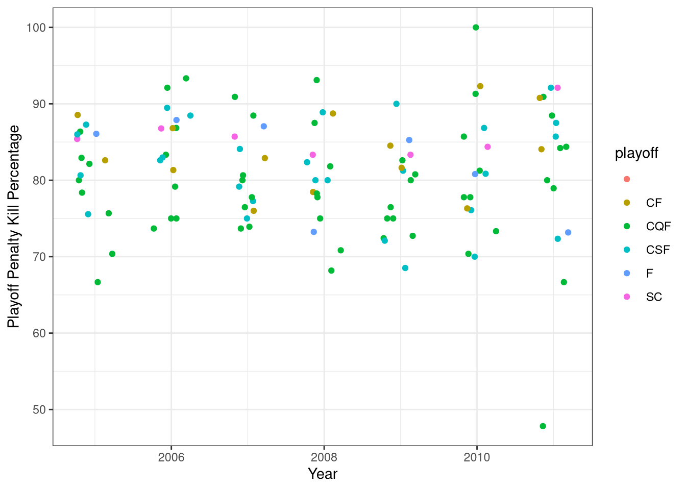
ggplot(data = NHL, aes(x = psPPpercent, y = psPKpercent, color = playoff)) +
geom_point(position = position_jitter(h=0, w=0.25)) +
theme_bw() +
labs(x = "Playoff Power Play Percentage",
y = "Playoff Penalty Kill Percentage")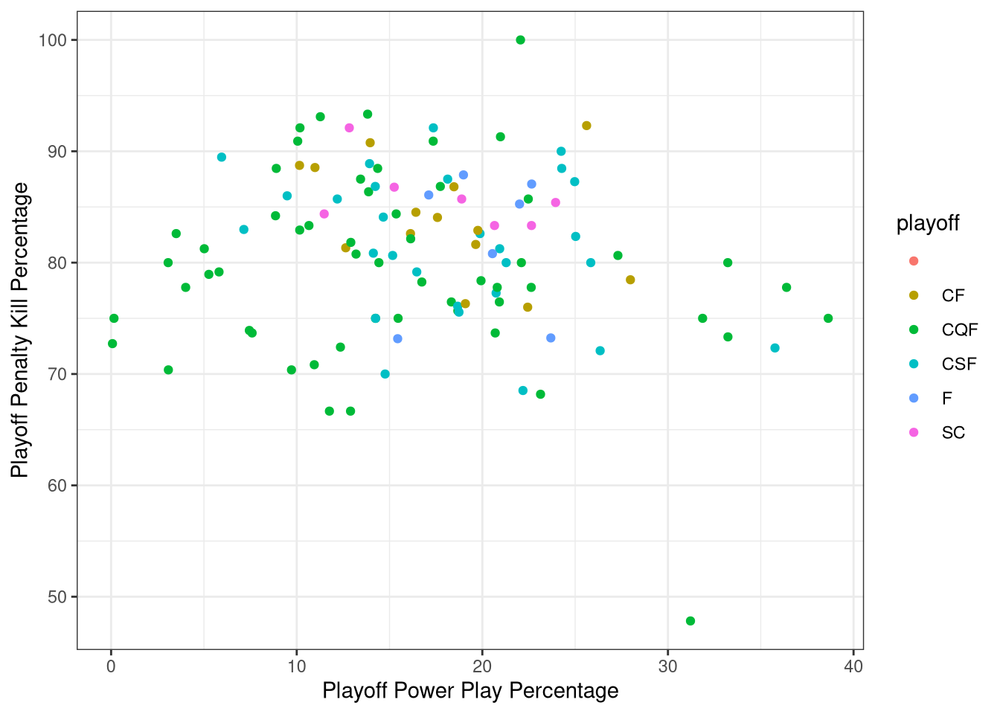
It looks like having a good penalty kill is more important than having a good powerplay although neither are great indicators of playoff success.
It looks like there aren’t any specific stats that indicate playoff success. I suppose all the matters is winning 16 games and that can be done in a variety of ways. This isn’t the most exciting result to find but it is good to know.